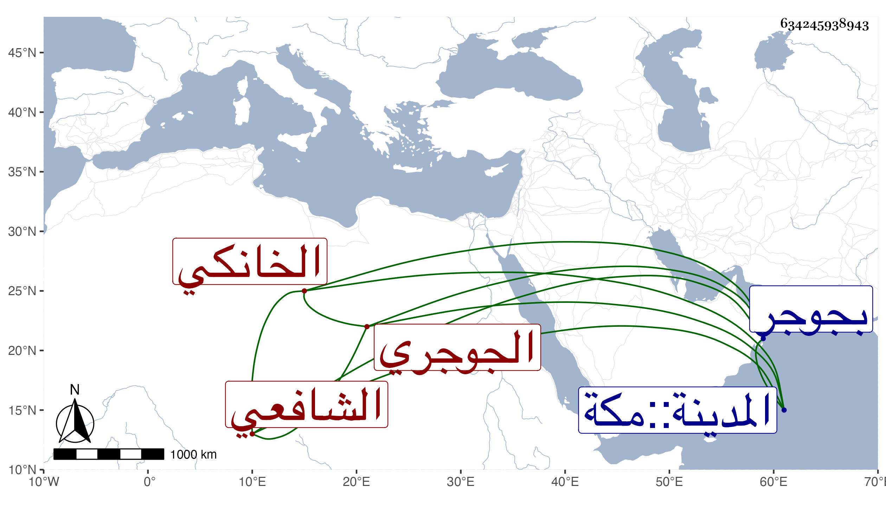

0902Sakhawi.DawLamic.ITO20230111-ara1.EIS1600.634245938943
Biography ID: 634245938943
500
محمد بن علي بن عبد الله بن إبراهيم بن سليمان الشمس الجوجري ثم الخانكي الشافعي والد علي الماضي ويعرف بالجوجري . ولد سنة ثلاث عشرة وثمانمائة تقريبا بجوجر ثم تحول مع أبيه وكان فقيرا إلى خانقاه سرياقوس فنزل وتسبب الأب بالعلاقة وغيرها وحفظ هو القرآن وجانبا من التنبيه بواسطة انتمائه لشريفين أعجميين أخوين كانا نازلين بها اسمهما علي ومحمد فكان يقرأ عليهما في الفقه وغيره وتدرب بهما في الطلب ومعرفة اللسان العجمي ولازم خدمتهما حتى انفصلا عنها إلى الحرمين ثم اختص بعلي الخراساني حين استقر به سودون من عبد الرحمن في مشيخة مدرسته بها وبصاحب الترجمة في مباشرتها وزاد بينهما الاختصاص سيما حين ترقيه بالحسبة ونظر الخانقاه ومشيختها وتكلم عنه في الخانقاه بل كان هو المستبد بها وبابن المحب بن الأشقر لذلك وامتنع من مباشرة حسبتها وكذا اختص بقانم التاجر وألزمه جانبك الجداوي بالتكلم عنه في الخانقاه ، ثم بعده باشرها عند الشهابي بن العيني إلى أن استقل بالنظر بعد موت الشريف علي الكردي وقام في أمرها وتنمية وقفها وعمارته وناكد كثيرا من مستحقيها ، وكذا تكلم عن قانم وغيره في الشيخونية والصرغتمشية والبيمارستان وعن قجماس في البرقوقية وامتنع من ذلك أيام الأمشاطي مع اختصاصهما ولا زال في ترق من المال والدور بالخانقاه وغيرها وكثرة الجهات مع مزيد إقدامه وكثرة كلامه وميله إلى الغلظة وتمام التجبر واتفق أن أخا له اسمه إبراهيم ضعف فنقل إلى علية ببيت هذا مما كان اللائق خلافه فلم يلبث أن ألقى نفسه من كوة إلى أسفل فمات ورام الملك التعرض له بسببه فدوفع . وربما مال للفقراء والفضلاء بحيث خطب الشرف عبد الحق السنباطي لتزويج ابنته من ابنه أخي البلبيسي وانتفع الشرف من قبله في حياته وبعدها . ولم يخل من فضيلة سيما ويذكر أنه حضر عند القاياتي والشرواني وكذا أخذ عن المناوي والوروري وتزوج بابنته وتكدر أبوها منه وكذا تزوج بابنة ابن الشيخ علي المحتسب وبابنة أخي السراج البلبيسي وكانت بينهما كلمات أفحمه هذا فيها وأخذ عن البوشي وغيرهم وكان مما أخذه عن البوشي في الفقه وقرأ على السنهوري في العربية مع حسن الخط وامتحن في أيام الأشرف قايتباي مرارا أولها وتجلد وتهدد بالمرافعة والمكافحة وغير وبدل ومات له ولد ثم آخر من ابنة ابن العجمي زاد على عشرين سنة أحضر له البدري أبو البقاء بن الجيعان لتجهيزه عشرة دنانير مع ثوب بعلبكي فأخذ ذلك وألزم أمه بتجهيزه مما هو عندها للميت وعد ذلك في تجبره . كل ذلك وهو منقطع متوجع حتى مات في رجب سنة سبع وتسعين عقب ولده بيسير وما تحققت ما اتفق بعده في تركته وأوقافه ووظائفه والظاهر أنها استهلكت عفا الله عنه وإيانا .
